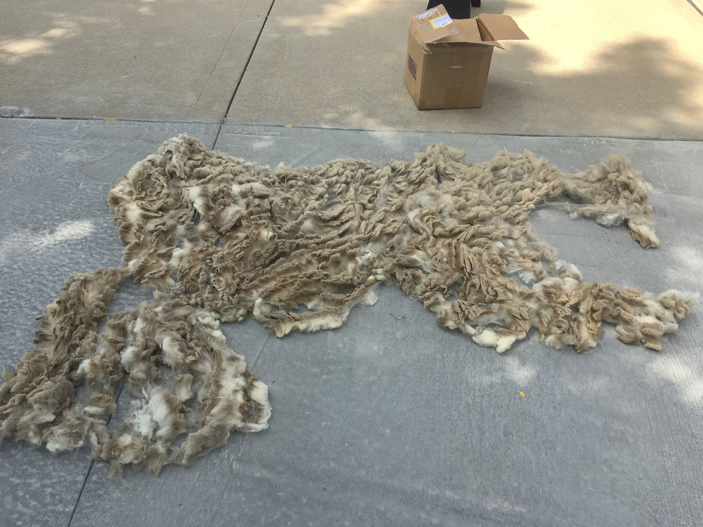
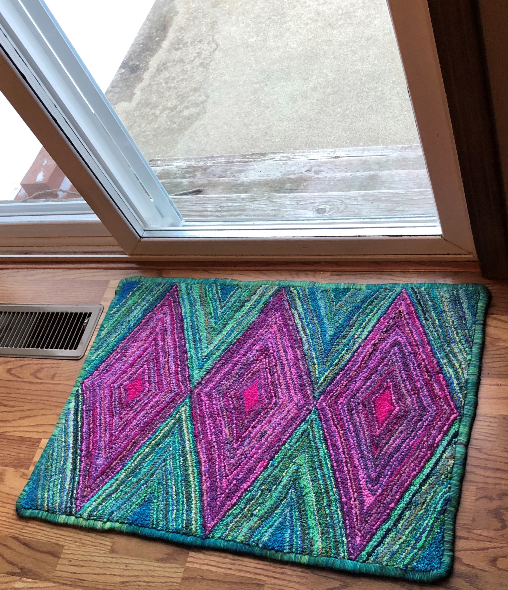
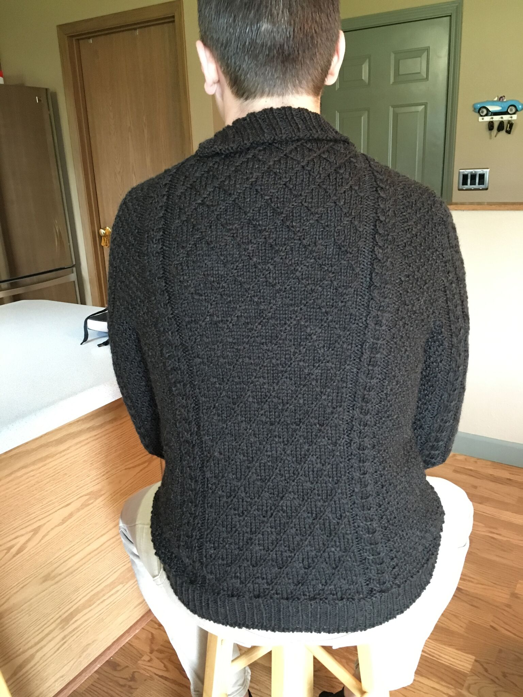

The items listed here are truly one of a kind and handcrafted by me in my Illinois fiber art studio. Please let me know if you have any questions. Thank you for taking the time to look at my work.
Raw Wool Processing



I like to buy whole fleeces from local shepherds and turn them into yarn and garments. This helps the sheep stay comfortable and healthy and helps the Shepard pay for the upkeep of the sheep. I like the idea of knowing a little about the sheep whose wool I'm wearing on my back and contributing to helping to keep a small farmer in business.
I wash small batches of the wool in warm water and Dawn dishsoap. This can be very labor intensive as the wool has to be picked through by hand to remove hay, seeds, twigs, poop, burrs, and general farm dirt. Once washed and air-dried I hand card most of the fleece before I spin it. Wool can be dyed before spinning or after its spun into yarn. I custom dye all of my yarns in my kitchen with acid dyes in small batches. This produces vibrant and unique skeins of yarn.
Spinning

I spin my yarn on a Schact Sidekick spinning wheel or one of a variety of hand spindles. Spinning yarn is an amazing process that I find to be relaxing and zen like. Its kind of like meditating. It's important to me to keep this skill alive because it almost died out in the late 1960's and early 1970's when acrylic yarn became widely available in local stores.
If I'm working on a large project and need lots of the exact same yarn I will use the spinning wheel to spin it. If I'm just sampling a small amount of wool to see how it will spin up, I'll use a hand-held drop spindle to spin the yarn. Sometimes I just want to have a portable project that can be easily carried and worked on just about anywhere, so I'll choose a small Turkish spindle and some combed top (one syte of wool preparation. Yes, there several ways to prepare wool for spinning!).
Handspun Yarn


I love yarn. I find it amazing that you can take wool off a sheep and make yourself a exquisite warm garment. Here are pictures of some of the yarn I've spun and dyed. Right now I have about two pounds of Black Welsh Mountain fleece cleaned and ready to spin. The sample skein I spun up turned out to be so enticing that I dont want to spin the rest of it until I know exactly what I will knit or weave from the yarn. I'm paralyzed with the fear that I will ruin it. So it sits in the closet waiting for me. Its a crafters paradox. Now it exists in my head as many lovely things. If I spin and make something it will only exist in one final form. What should I do?
Rug Hooking


Sometimes I think I have too much yarn and need to find an alternative method of expending my supply. So recently I've been teaching myself to make hand hooked rugs. That just led me down a deep dark rabbit hole of rug making. Now I have a Rug Twining Loom and bins and suitcases stuffed with wool fabric to cut into strips and braid, twine, and hook. And it turns out that it doesn't take all that much yarn to hook a rug. But it takes quite a bit of time.
Knitting

Knitting is kind of what started this madness. My Grandma Alta taught me to crochet when I was very young. She tried to teach me to knit but I was too young to get the hang of it. I always wanted to learn so My Mother-In-Law Adrienne taught me. I find it easier to make a knitted garment than a sewn garment because its so much easier to modify the patterns to adjust fit and size. Plus you can hide your mistakes. This is a sweater I knit for my youngest son Maxx. He has excellent taste in clothes. And is handsome and smart. Just ask me.